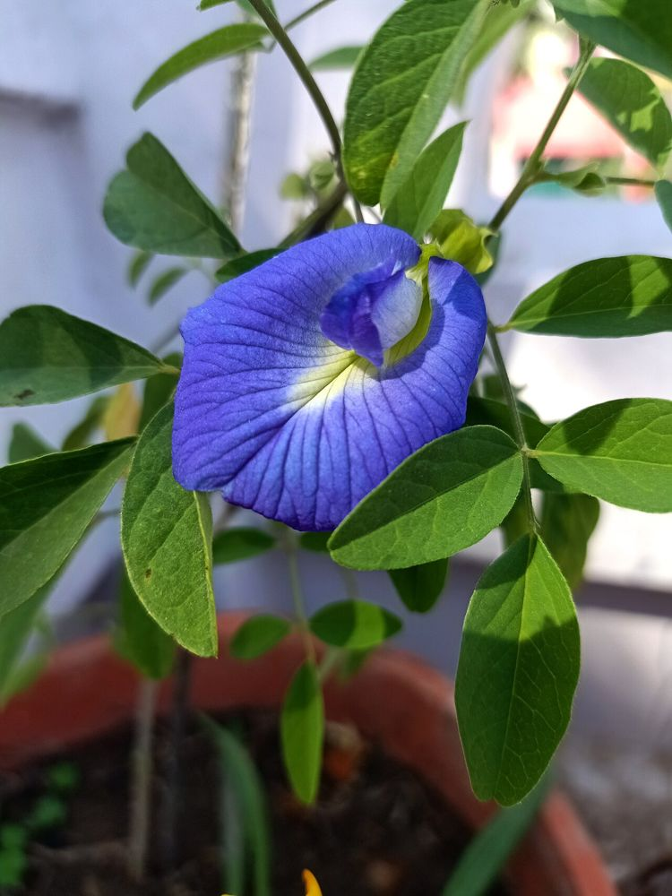

🌸 சங்குப்பூ – உங்களுக்குத் தெரியுமா?
1நிறம் மாறும் மாயப் பூ
சங்குப்பூவை நீரில் ஊறவைத்தால் அடர் நீல நிறம் கிடைக்கும். அதில் சில துளி எலுமிச்சைச் சாறு சேர்த்தால் உடனே ஊதா நிறமாக மாறும். இதுவே உலகப் புகழ்பெற்ற "நீலத் தேநீர்" (Blue Tea).
2பெயருக்கேற்ற வடிவம், அறிவுக்கேற்ற மூலிகை
பூவின் வடிவம் சங்கு போல் இருப்பதால் "சங்குப்பூ" என்று பெயர். சித்த மருத்துவத்தில் இது நினைவாற்றலையும் மன அமைதியையும் தரும் மூலிகையாகப் போற்றப்படுகிறது.
3மண்ணுக்கு இயற்கை உரம்
இது அவரை இனத்தைச் சேர்ந்த கொடி. இதன் வேர்கள் காற்றிலுள்ள நைட்ரஜனை மண்ணில் சேர்த்து, மண்வளத்தைத் தானாகவே பெருக்குகின்றன.
🌿 சித்த மருத்துவக் குறிப்பு:
நிழலில் உலர்த்திய 3–4 பூக்களை வெந்நீரில் ஊறவைத்துத் தேநீராக அருந்தினால் மன அமைதியும் நல்ல உறக்கமும் கிடைக்கும் என்பது சித்தர் மரபு. (கர்ப்பிணிகள் மற்றும் மருந்து உட்கொள்பவர்கள் மருத்துவர் ஆலோசனையுடன் பயன்படுத்தவும்.)
இந்தத் தகவல் பயனுள்ளதாக இருந்ததா?